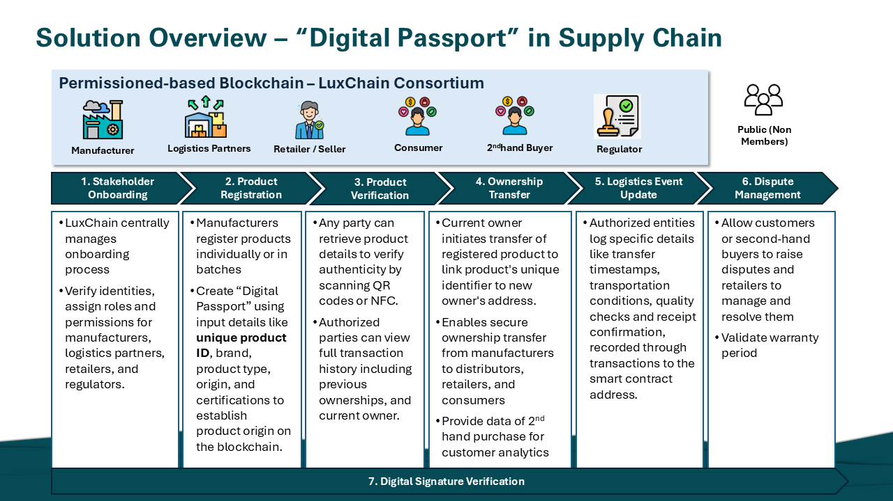
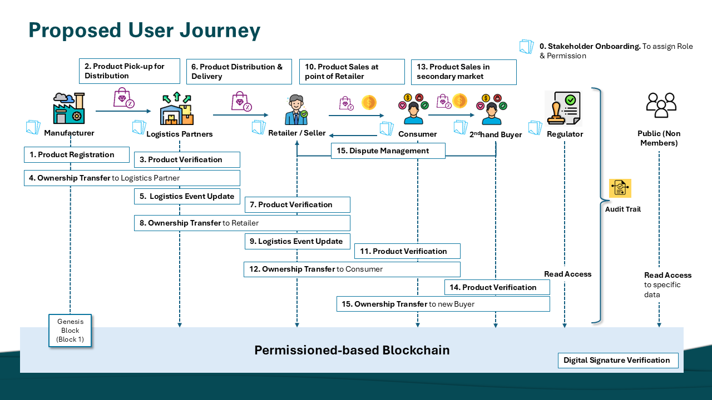

SMU MITB IS627 2024 Project
The luxury goods market has seen significant growth due to rise of
demand for high-end products worldwide. Consumers seek prestige and
authenticity, but this has led to an increase in counterfeit goods.
This rampant counterfeiting not only erodes brand revenues but also
inflates operational costs as companies work to protect product
authenticity, ultimately undermining consumer trust and brand
equity. Despite regulatory changes and enhanced customs enforcement,
counterfeiters continue to exploit system loopholes, particularly
through online marketplaces, which account for around 31% of
counterfeit sales. The growing online demand for luxury goods at
lower prices has intensified these challenges, placing a financial
strain on brands while diluting their market presence.
Due to the decentralized, transparent, and immutable nature of
blockchain, we saw an opportunity to utilize it to keep tamper-proof
records of the lifecycle of a product. we propose a traceability
system LuxChain for protecting against luxury counterfeits
leveraging on a series of smart contracts.
In LuxChain, Ethereum is used as the smart contract platform to develop an anti-counterfeit system that can be accessed by manufacturers, retailers, logistics providers, regulators, and consumers. It records the ownership of assets as it circulates in the market, proving its authenticity through traceability. This is done by issuing a Digital Passport alongside a physical product.
Firstly, manufacturers create a unique digital ID for each luxury product based on a unique QR code or NFC, and information of each item is stored on the blockchain. This ID is available for anyone in the LuxChain blockchain to access and use to trace relevant information about the product and its ownership at point of sales for verification purpose. During a luxury goods transaction, the verification of authenticity can be done by matching the seller's wallet address to the owner's wallet address stored on the blockchain. Transfer of ownership for the digital identity using a smart contract can only be initiated by the owner's wallet. Consumers or buyers in the secondary marketplace will receive the new product ownership only if the current owner address and the product ID is the same as the ones recorded on the blockchain.
The prototype is built using React. web3.js connects it to a series of smart contracts written in Solidity and deployed in the Sepolia Ethereum TestNet. The metadata of digital assets are stored using Pinata IPFS client. The code can be found in the following Github repo.
This project was my first foray into Blockchain technology and I
learned a lot through the course about its potential business use
cases. The concepts of a dApp was surprisingly not too different
from normal software engineering, once you get into the mindset that
Blockchain essentially functions as a decentralized, immutable
database. However, because of that immutability, there are some
aspects to consider about deployment and data validation that are
different from a normal application.
Personally, had I been given more time for the project, I think that
a public blockchain like Ethereum might not be the best choice for
LuxChain. Ideally, LuxChain should be deployed using a permissioned
blockchain like Hyperledger Besu, where it can be governed by
validated manufacturing brands and roles can be assigned to
different stakeholders in the system. Additionally, a lighter
consensus mechanism like
Proof of Authority using QBFT (Quorum Byzantine Fault
Tolerance)
can be used instead of a public blockchain's Proof of Work,
saving costs on gas fees and compute.